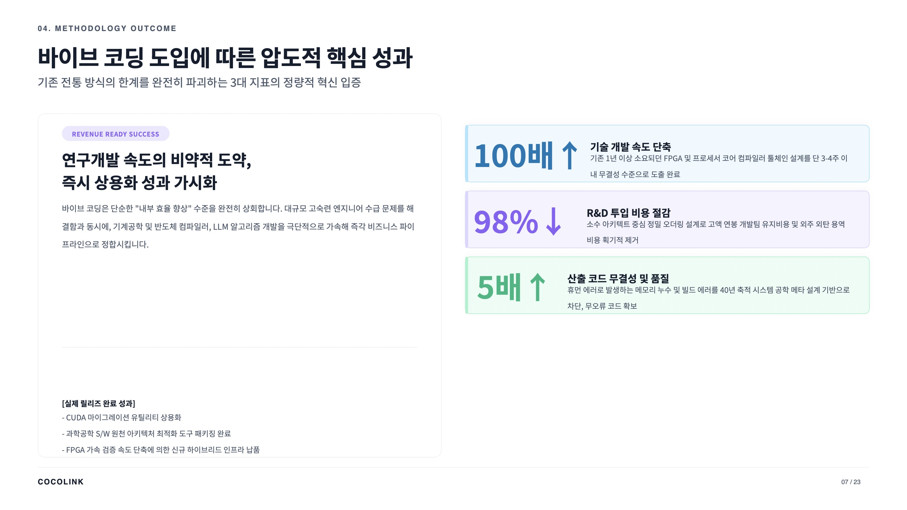

코코링크는 국내에서 컴퓨터(서버)를 직접 생산하는 거의 유일한 회사다. 자체 반도체 두뇌(프로세서)를 설계하려고 박사급 3명과 전문가 3명이 3년간 매달렸지만 끝내 완성하지 못했다. 큰돈을 쓰고도 막혀 있던 상태였다.
과정에서 배운 바이브 코딩(AI에게 말로 시켜 개발하는 방법)을 40년 소프트웨어, 30년 하드웨어 경력에 얹었다. 그러자 3년 묵은 프로세서 설계가 거의 일주일 만에 제품 수준으로 완성됐고, 그 위에서 돌아가는 컴파일러(프로그램 번역기)는 1시간 반 만에 나왔다. 특허 문서도 AI가 함께 써서 50건을 작성했는데, 변리사 사무실이 "1년에 19건까지만 처리 가능하다"고 손사래를 칠 정도였다. 다만 대표는 분명히 선을 긋는다. 바이브 코딩은 "지게 지는 법은 1시간이면 배우지만 747 조종은 10년 걸리는" 기술이라, 수십 년의 실무 경험으로 문제를 정확히 정의할 수 있는 사람이어야 제대로 쓸 수 있다는 것이다.
개발 속도 100배, 인건비 98% 절감을 확인했고, 회사는 서버 제조사에서 반도체 기업으로 변신 중이다. 2028년부터 자체 반도체를 만드는 것이 목표인데, 이 모든 것을 반도체 전공자 없이 해냈다. "이 속도가 두렵다"는 솔직한 고백이 발표의 여운을 남겼다.